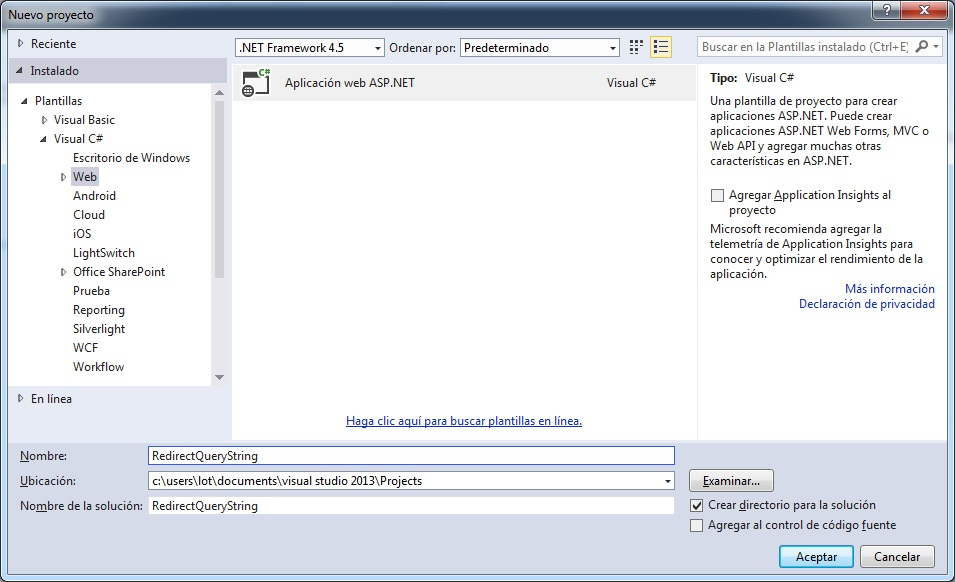
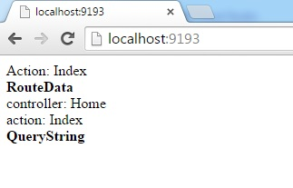

ASP.NET MVC. RedirectToAction propagando el QueryString
En ocasiones nos podemos encontrar con en una acción de redirección necesitamos pasar valores recibidos en el QueryString a la acción destino. Si los posibles parámetros son pocos y claramente definidos podemos hacerlo a través
del parámetro routeValues. ¿Pero qué pasa si los posibles parámetros son muchos o, peor aún, indefinidos?
He leído algún comentario por parte del equipo de desarrollo de MVC indicando que es una problemática a la que tienen pensado dar solución en futuras versiones. Pero, ¿qué se puede hacer mientras tanto?
Para mostrar tanto el problema como la solución voy a crear un nuevo proyecto web
RedirectQueryString utilizando la plantilla vacía de ASP.NET y marcando el check MVC.


En la carpeta Controllers creo un controlador HomeController.cs
con dos acciones:
- La acción Index que será el destino de la redirección. Esta acción simplemente mostrará el nombre de la acción y el contenido de la colección RouteData y el QueryString. Para simplificar el ejemplo devuelve los datos en un string directamente al navegador.
- La acción Redirect que devuelve un resultado RedirectToRouteResult redirigiendo la petición a la acción Index.
El código del archivo HomeController.cs:
C#Visual Basic
Editar script|Remove
csharpvb
namespace RedirectQueryString.Controllers
{
public class HomeController : Controller
{
public string Index()
{
string result = "Action: Index<br/>";
result += "<b>RouteData</b><br/>";
foreach (string key in RouteData.Values.Keys)
result += string.Format("{0}: {1}<br/>"
, key, RouteData.Values[key]);
result += "<b>QueryString</b><br/>";
foreach (string key in Request.QueryString.AllKeys)
result += string.Format("{0}: {1}<br/>"
, key, Request.QueryString[key]);
return result;
}
public RedirectToRouteResult Redirect()
{
return RedirectToAction("Index");
}
}
}
Namespace Controllers
Public Class HomeController
Inherits Controller
Function Index() As String
Dim result As String = "Action: Index<br/>"
result += "<b>RouteData</b><br/>"
For Each key As String In RouteData.Values.Keys
result += String.Format("{0}: {1}<br/>", key, RouteData.Values(key))
Next
result += "<b>QueryString</b><br/>"
For Each key As String In Request.QueryString.AllKeys
result += String.Format("{0}: {1}<br/>", key, Request.QueryString(key))
Next
Return result
End Function
Function Redirect() As RedirectToRouteResult
Return RedirectToAction("Index")
End Function
End Class
End Namespace
namespace RedirectQueryString.Controllers { public class HomeController : Controller { public string Index() { string result = "Action: Index<br/>"; result += "<b>RouteData</b><br/>"; foreach (string key in RouteData.Values.Keys) result += string.Format("{0}: {1}<br/>" , key, RouteData.Values[key]); result += "<b>QueryString</b><br/>"; foreach (string key in Request.QueryString.AllKeys) result += string.Format("{0}: {1}<br/>" , key, Request.QueryString[key]); return result; } public RedirectToRouteResult Redirect() { return RedirectToAction("Index"); } } }
Si arrancamos la aplicación y accedemos a las urls
http://<rutapublicacion> o http://<rutapublicacion>/Home/Redirect obtenemos el mismo resultado:

Pero ¿qué sucede si intentamos acceder a una url del tipo
http://<rutapublicacion>/Home/Redirect?dato=4 ? Obtenemos exactamente el mismo resultado. Entonces, ¿cómo conseguimos pasar el valor de dato a la acción Index?
La opción más sencilla es utilizar el parámetro routeValues del método RedirectToAction. Para ello reescribimos el código de la acción Redirect:
C#Visual Basic
Editar script|Remove
csharpvb
public RedirectToRouteResult Redirect()
{
return RedirectToAction("Index"
, new { dato = Request.QueryString["dato"] });
}
Function Redirect() As RedirectToRouteResult
Return RedirectToAction("Index", New With { .dato = Request.QueryString("dato") })
End Function
public RedirectToRouteResult Redirect() { return RedirectToAction("Index" , new { dato = Request.QueryString["dato"] }); }
Ahora al acceder a la url http://<rutapublicacion>/Home/Redirect?dato=14:

¿Y si los posibles valores fueran muchos o no los conociéramos de antemano? Entonces utilizaríamos la sobrecarga del método
RedirectToAction que acepta una colección del tipo RouteValueDictionary:
C#Visual Basic
Editar script|Remove
csharpvb
public RedirectToRouteResult Redirect()
{
RouteValueDictionary routeData = new RouteValueDictionary();
foreach (string key in Request.QueryString.AllKeys)
routeData.Add(key, Request.QueryString[key]);
return RedirectToAction("Index", routeData);
}
Function Redirect() As RedirectToRouteResult
Dim routeData As RouteValueDictionary = New RouteValueDictionary()
For Each key As String In Request.QueryString.AllKeys
routeData.Add(key, Request.QueryString(key))
Next
Return RedirectToAction("Index", routeData)
End Function
public RedirectToRouteResult Redirect() { RouteValueDictionary routeData = new RouteValueDictionary(); foreach (string key in Request.QueryString.AllKeys) routeData.Add(key, Request.QueryString[key]); return RedirectToAction("Index", routeData); }
Para utilizar la clase RouteValueDictionary deberemos añadir una referencia al namespace
System.Web.Routing:
C#Visual Basic
Editar script|Remove
csharpvb
using System.Web.Routing;
Imports System.Web.Routing
using System.Web.Routing;
Para probarlo accedemos a la url: http://<rutapublicacion>/Home/Redirect?dato=4&otrodato=8:

Otro escenario que quería contemplar es cuando utilizamos estos valores del QueryString a lo largo de toda la aplicación y tenemos muchas acciones de redirección. Podríamos repetir el código anterior
en todas las acciones o utilizar un atributo de filtro. He de decir que la solución anterior también me ha dado algún problema cuando la acción destino requiere autenticación y debe pasar por una pantalla de login, en este
caso también es una alternativa a tener en cuenta.
Para mostrar esta solución vamos a crear una nueva carpeta Code en el proyecto y en esta carpeta una nuevo archivo de clase llamado PropagarQueryStringAttribute.cs. La clase PropagarQueryStringAttribute heredará de la clase ActionFilterAttribute, esta clase implementa las interfaces IActionFilter e IResultFilter las cuales definen métodos que se ejecutan antes y después de ejecutar la acción y el resultado de ésta respectivamente. En este caso sobreescribiremos el método que se ejecuta después de ejecutar la acción para añadir a la colección RouteValues del resultado los valores del QueryString:
C#Visual Basic
Editar script|Remove
csharpvb
using System; using System.Collections.Generic; using System.Collections.Specialized; using System.Linq; using System.Web; using System.Web.Mvc; namespace RedirectQueryString.Code { public class PropagarQueryStringAttribute: ActionFilterAttribute { public override void OnActionExecuted(ActionExecutedContext filterContext) { var redirectResult = filterContext.Result as RedirectToRouteResult; if (redirectResult != null) { NameValueCollection query = filterContext.HttpContext.Request.QueryString; foreach (string key in query.Keys) { if (!redirectResult.RouteValues.ContainsKey(key)) redirectResult.RouteValues.Add(key, query[key]); } } base.OnActionExecuted(filterContext); } } }
Imports System.Web.Mvc Public Class PropagarQueryStringAttribute Inherits ActionFilterAttribute Public Overrides Sub OnActionExecuted(filterContext As ActionExecutedContext) Dim redirectResult As RedirectToRouteResult = filterContext.Result If (redirectResult IsNot Nothing) Then Dim query As NameValueCollection = filterContext.HttpContext.Request.QueryString For Each key As String In query.Keys If (Not redirectResult.RouteValues.ContainsKey(key)) Then redirectResult.RouteValues.Add(key, query(key)) End If Next End If MyBase.OnActionExecuted(filterContext) End Sub End Class
using System; using System.Collections.Generic; using System.Collections.Specialized; using System.Linq; using System.Web; using System.Web.Mvc; namespace RedirectQueryString.Code { public class PropagarQueryStringAttribute: ActionFilterAttribute { public override void OnActionExecuted(ActionExecutedContext filterContext) { var redirectResult = filterContext.Result as RedirectToRouteResult; if (redirectResult != null) { NameValueCollection query = filterContext.HttpContext.Request.QueryString; foreach (string key in query.Keys) { if (!redirectResult.RouteValues.ContainsKey(key)) redirectResult.RouteValues.Add(key, query[key]); } } base.OnActionExecuted(filterContext); } } }
Para probar el nuevo atributo crearemos una nueva acción en el archivo
HomeController.cs y le aplicamos el atributo recién creado:
C#Visual Basic
Editar script|Remove
csharpvb
[PropagarQueryString]
public RedirectToRouteResult RedirectQueryString()
{
return RedirectToAction("Index");
}
<PropagarQueryString>
Function RedirectQueryString() As RedirectToRouteResult
Return RedirectToAction("Index")
End Function
[PropagarQueryString] public RedirectToRouteResult RedirectQueryString() { return RedirectToAction("Index"); }
Para poder utilizar el atributo PropagarQueryString deberemos añadir una referencia al namespace
RedirectQueryString.Code:
C#
Editar script|Remove
csharp
using RedirectQueryString.Code;
using RedirectQueryString.Code;
Para probar el nuevo atributo accedemos a la url
http://<rutapublicacion>/Home/RedirectQueryString?dato=4&otrodato=8: